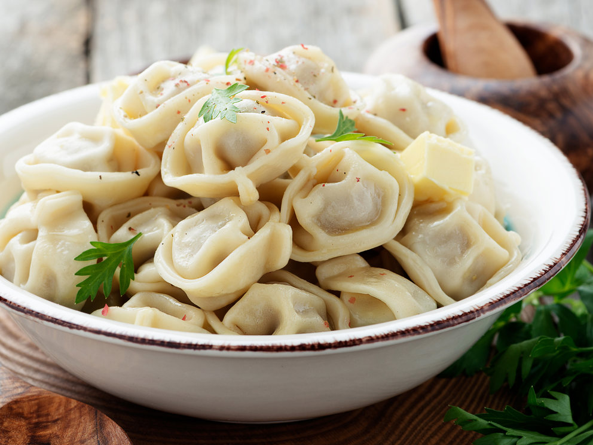

Pelmeni

Description
Pelmeni is a traditional Russian dish that consists of small dumplings filled with meat, typically beef, pork, or a combination of both.
To make pelmeni, a simple dough is rolled out and cut into small circles, then filled with a seasoned meat mixture and formed into small, sealed dumplings.
Pelmeni can be boiled or fried and are often served with sour cream, butter, or a vinegar-based sauce for added flavor. They are a popular comfort food in Russia and are enjoyed by many around the world.
Ingredients
- All-purpose flour
- Water
- Salt
- Ground beef and/or ground pork
- Onion
- Garlic
- Salt and Pepper
- Egg
- Dill
Steps
- Make the dough: Combine the flour and salt in a large bowl. Add the water and knead until a smooth dough forms. Wrap the dough in plastic wrap and let it rest for at least 30 minutes.
- Make the filling: In a separate bowl, combine the ground beef and/or pork with the onion, garlic, salt, pepper, egg, and optional parsley or dill.
- Form the pelmeni: Roll out the dough on a floured surface and cut into small circles using a glass or round cookie cutter. Place a teaspoon of filling in the center of each circle and fold the edges of the dough around the filling to create small sealed pockets.
- Cook the pelmeni: Bring a large pot of salted water to a boil. Carefully add the pelmeni to the boiling water and cook for about 4-5 minutes, or until they float to the surface and the meat is fully cooked.
- Serve the pelmeni: Use a slotted spoon to remove the pelmeni from the water and place them on serving plates. Serve with sour cream or a vinegar-based sauce, and garnish with additional parsley or dill, if desired.
Enjoy your homemade pelmeni!